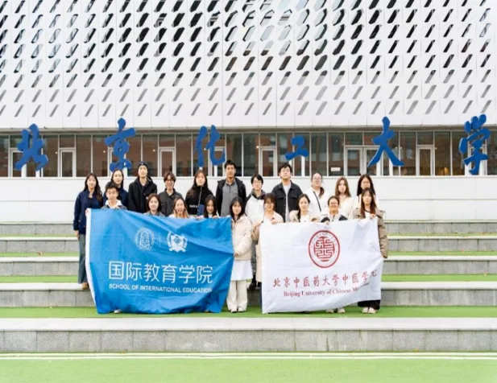
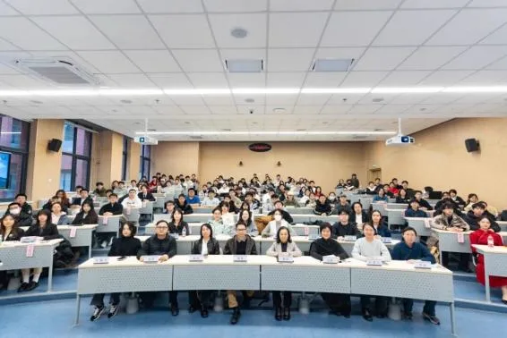
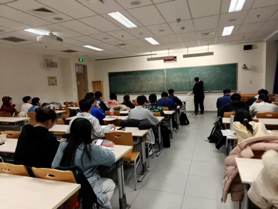
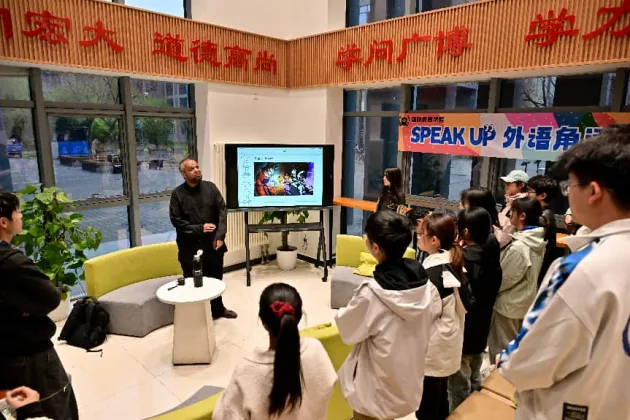
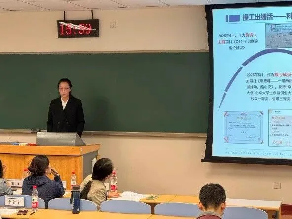
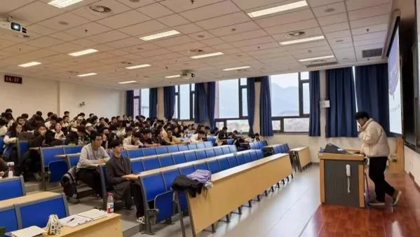
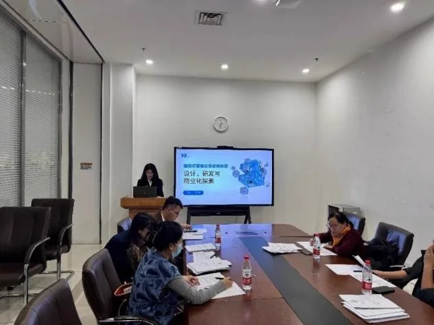
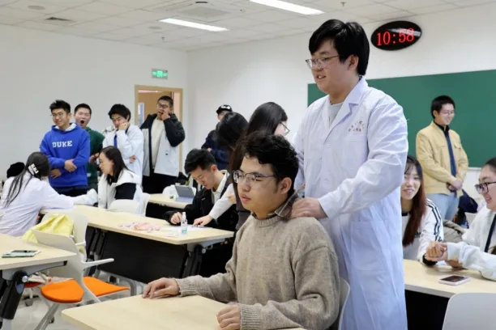
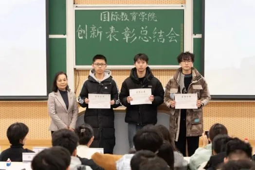
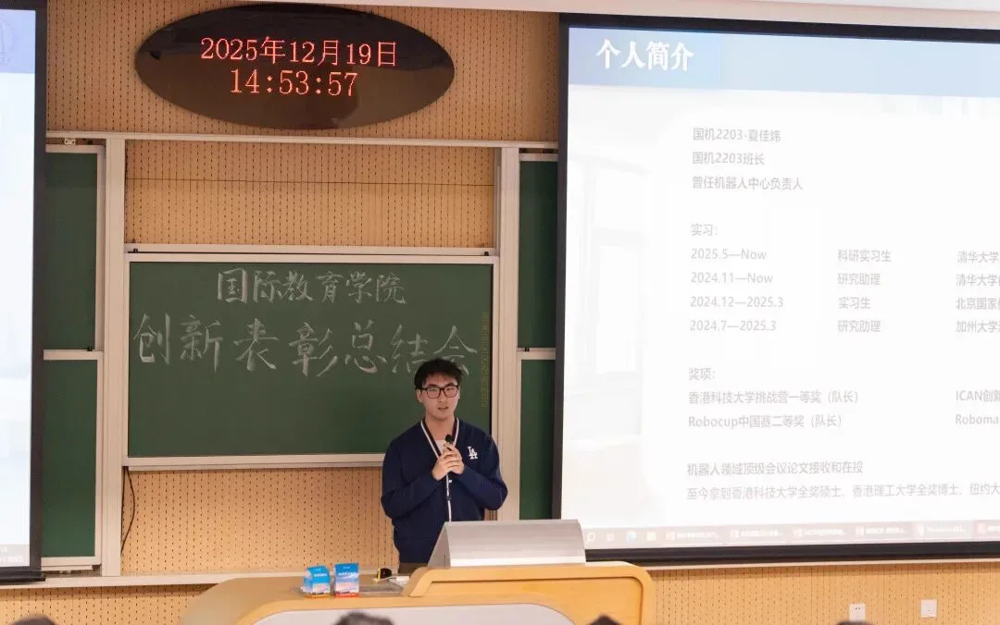
Academic Growth Atlas
从课程到成果，搭起每一步的学术支点
学术科技部把课程辅导、外语表达、奖学金经验、科创竞赛与资源共享组织成一条可回看的成长路径。
五条成长路径
从学辅到科创，打开学术科技部的活动图谱
围绕课程支持、榜样经验、科创实践与成果展示，串起同学们在学术成长中的每一次参与。
在考前最需要方向的时候，把知识点、题型和复习节奏一起梳理清楚。
SIE学辅
期中、期末考试前，为帮助同学们高效复习，充足备考，轻松应考，学术科技部会开展考前复习活动——针对知识点、题型进行串讲与辅导，我们将邀请往届的高绩点讲师为大家系统梳理知识体系，总结分享做题经验，助力大家取得佳绩。
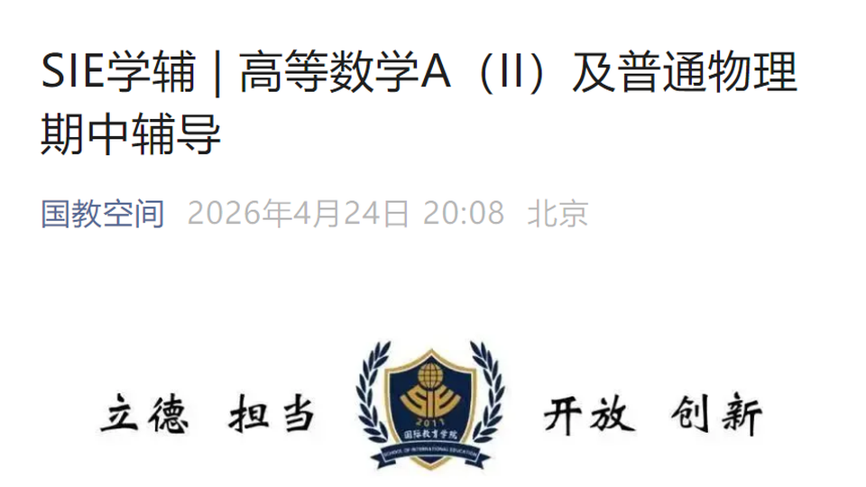
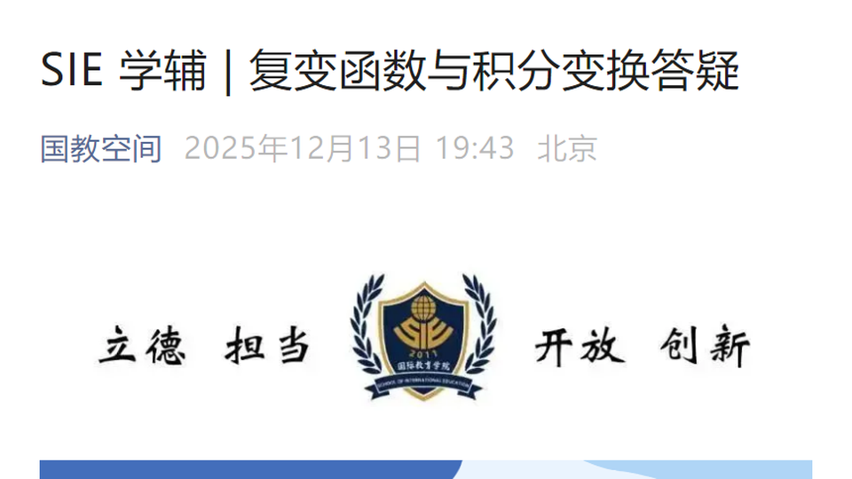
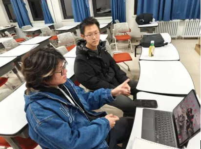
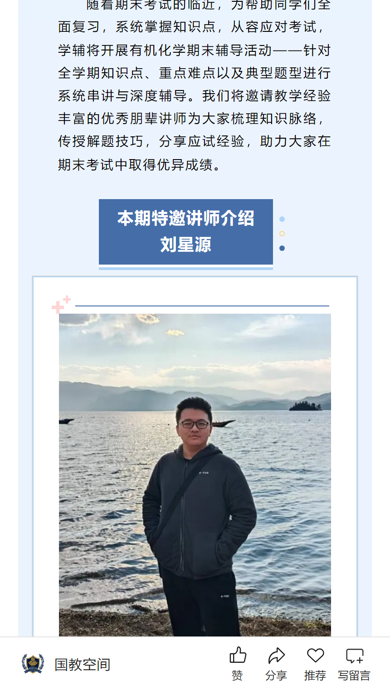
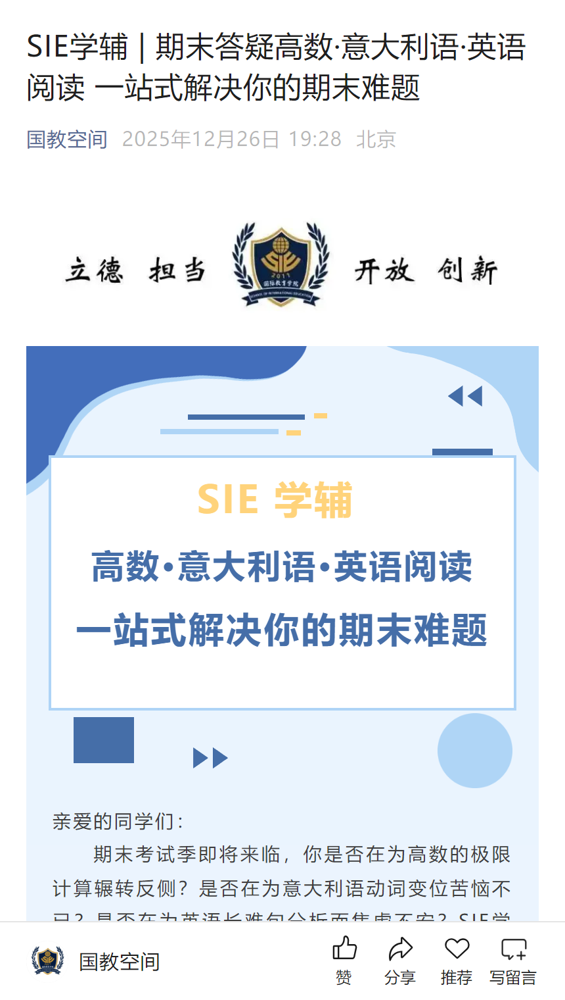
......更多课程，等你解锁
Speak Up! 外语角
让语言练习在真实交流中发生
Speak Up！外语角延续轻松交流的节奏，把听说练习、现场互动和语言表达放在同一个场景里，既能看见活动，也能看见同学们真正开口的瞬间。
Scholarship Dossiers
把优秀拆解成可以参考的路径
从答辩现场到榜样分享，把优秀同学的经验沉淀成可学习、可借鉴的成长线索。
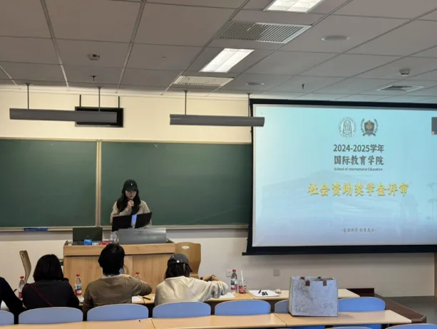
National Scholarship / 01
国奖榜样零距离系列推送
以国奖榜样为坐标，把学习方法、科研实践与成长选择讲给更多同学听。
成长档案
从形象照开始，逐张翻开他们的经验分享
把优秀经验拆成可借鉴的行动线索，让榜样不只停留在荣誉榜上，也成为可以靠近的路径。
科创竞赛
从报名通知到项目打磨，给想法一个上场位置
萌芽杯、挑战杯和职业规划大赛覆盖不同方向的创新实践。学术科技部通过信息同步、材料整理和经验支持，帮助同学把想法推进到可展示的作品。
创新表彰总结会
让创新实践被看见，也让下一次出发有方向
总结会包含创新竞赛成果颁奖、专业工作室指导老师及部门负责人聘书颁发、学生经验分享。它既是一次表彰，也是下一轮创新实践的起点。
SIEBridge
上传、审核、共享、凭证，课程资料在这里完成闭环
SIEBridge课程资源共享平台
SIEBridge 把课程资料共享做成一条清晰的路径：同学上传资料，学术科技部完成审核，审核通过后进入课程资源库，同时为上传者生成可下载的 PDF 上传凭证。


选择课程并上传资料
进入对应课程后，可上传文件或文件夹，保留原有目录结构；资料类型、文件名和课程信息会一起记录。
提交学术科技部审核
提交后资料进入审核队列，由学术科技部负责人、分管主席或终极管理员确认内容是否适合公开共享。
通过后进入资源库
审核通过的资料会展示在课程资源中；上传者也能在“我的”里查看上传记录和凭证。
审核通过后自动生成 PDF
- 姓名 / 学号
- 记录上传者身份
- 课程信息
- 对应课程与资料类型
- 上传内容
- 文件名与文件夹结构
- 落款
- 国际教育学院学术科技部
成员介绍
把学术支持做扎实，也把资源服务接续好
赵启涵
统筹学术科技部项目矩阵、跨部门资源协同与重点活动复盘，保证课程资源、竞赛支持和活动展示持续推进。
王力源
负责 SIEBridge 资源流转、课程学辅与材料审核。
郭雨翔
负责竞赛支持、表达训练与活动展示素材整理。